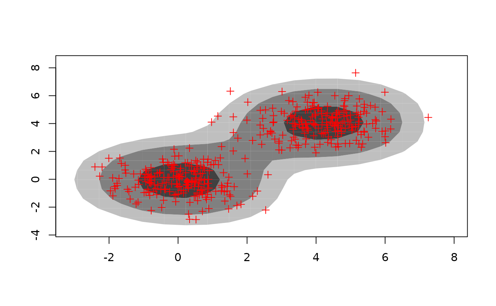

Calculates and plots highest density regions in two dimensions, including the bivariate HDR boxplot.
hdr.2d( x, y, prob = c(50, 95, 99), den = NULL, kde.package = c("ash", "ks"), h = NULL, xextend = 0.15, yextend = 0.15 ) hdr.boxplot.2d( x, y, prob = c(50, 99), kde.package = c("ash", "ks"), h = NULL, xextend = 0.15, yextend = 0.15, xlab = "", ylab = "", shadecols = "darkgray", pointcol = 1, outside.points = TRUE, ... ) # S3 method for hdr2d plot( x, shaded = TRUE, show.points = FALSE, outside.points = FALSE, pch = 20, shadecols = gray((length(x$alpha):1)/(length(x$alpha) + 1)), pointcol = 1, ... )
Arguments
| x | Numeric vector |
|---|---|
| y | Numeric vector of same length as |
| prob | Probability coverage required for HDRs |
| den | Bivariate density estimate (a list with elements x, y and z where
x and y are grid values and z is a matrix of density values). If
|
| kde.package | Package to be used in calculating the kernel density
estimate when |
| h | Pair of bandwidths passed to either |
| xextend | Proportion of range of |
| yextend | Proportion of range of |
| xlab | Label for x-axis. |
| ylab | Label for y-axis. |
| shadecols | Colors for shaded regions |
| pointcol | Color for outliers and mode |
| outside.points | If |
| ... | Other arguments to be passed to plot. |
| shaded | If |
| show.points | If |
| pch | The plotting character used for observations. |
Value
Some information about the HDRs is returned. See code for details.
Details
The density is estimated using kernel density estimation. Either
ash2 or kde is used to do the
calculations. Then Hyndman's (1996) density quantile algorithm is used to
compute the HDRs.
hdr.2d returns an object of class hdr2d containing all the
information needed to compute the HDR contours. This object can be plotted
using plot.hdr2d.
hdr.boxplot.2d produces a bivariate HDR boxplot. This is a special
case of applying plot.hdr2d to an object computed using
hdr.2d.
References
Hyndman, R.J. (1996) Computing and graphing highest density regions American Statistician, 50, 120-126.
See also
Author
Rob J Hyndman
Examples
